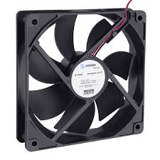
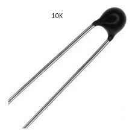
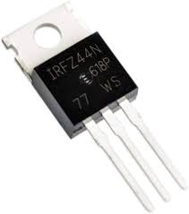
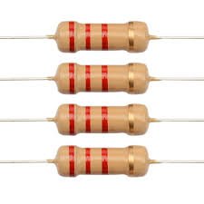

Prototipo
Explicación de la elaboración del prototipo:
Primero instalamos 2 baterías de 9 Voltios de corriente continua en paralelo, luego conectamos el negativo de la batería directo al ventilador de 12 Voltios y el positivo lo enviamos a un interruptor para controlar el circuito(apagar o encender), luego enviamos corriente a una resistencia de 2.2kohms que va conectada a una terminal del termistor NTC 10k, también le instalamos corriente en la entrada del MOSFET IRFZ44N de ahí mismo le conectamos de la parte del medio del mosfet un cable hacia la otra terminal del termistor, desde ahí también al positivo del ventilador y de la última terminal del mosfet la conectamos a la terminal donde conectamos la resistencia
Materiales
- Ventilador de 12v
- Batería de 12v
- Termistor NTC 10K
- MOSFET IRFZ44N
- Resistencia 2.2kΩ
| Componente | Uso | Imagen de referencia |
|---|---|---|
| Ventilador de 12V | Proporciona flujo de aire. Se conecta a la fuente de 12V para funcionar. |  |
| Batería de 12V | Fuente de alimentación para el ventilador y el circuito. Proporciona la energía eléctrica necesaria para el funcionamiento del sistema. | |
| Termistor NTC 10K | Sensor de temperatura. Su resistencia cambia con la temperatura, permitiendo medir la temperatura ambiente. |  |
| MOSFET IRFZ44N | Transistor de efecto de campo. Actúa como un interruptor controlado por el circuito para encender y apagar el ventilador, regulando su velocidad según la señal del termistor. |  |
| Resistencia 2.2kΩ | Elemento pasivo que, junto con el termistor, forma un divisor de voltaje. Este divisor permite convertir el cambio de resistencia del termistor en un cambio de voltaje que el MOSFET puede interpretar para controlar la velocidad del ventilador. |  |